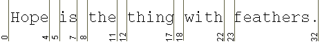

Feedback Form
|
|
Start of Tutorial > Start of Trail > Start of Lesson |
Search
Feedback Form |
TheBreakIteratorclass is locale-sensitive, because text boundaries vary with language. For example, the syntax rules for line breaks are not the same for all languages. To determine which locales theBreakIteratorclass supports, invoke thegetAvailableLocalesmethod, as follows:Locale[] locales = BreakIterator.getAvailableLocales();You can analyze four kinds of boundaries with the
BreakIteratorclass: character, word, sentence, and potential line break. When instantiating aBreakIterator, you invoke the appropriate factory method:
getCharacterInstancegetWordInstancegetSentenceInstancegetLineInstanceEach instance of
BreakIteratorcan detect just one type of boundary. If you want to locate both character and word boundaries, for example, you create two separate instances.A
BreakIteratorhas an imaginary cursor that points to the current boundary in a string of text. You can move this cursor within the text with thepreviousand thenextmethods. For example, if you've created aBreakIteratorwithgetWordInstance, the cursor moves to the next word boundary in the text every time you invoke thenextmethod. The cursor-movement methods return an integer indicating the position of the boundary. This position is the index of the character in the text string that would follow the boundary. Like string indexes, the boundaries are zero-based. The first boundary is at 0, and the last boundary is the length of the string. The following figure shows the word boundaries detected by thenextandpreviousmethods in a line of text:
This figure has been reduced to fit on the page.
Click the image to view it at its natural size.You should use the
BreakIteratorclass only with natural-language text. To tokenize a programming language, use theStreamTokenizerclass.The sections that follow give examples for each type of boundary analysis. The coding examples are from the source code file named
BreakIteratorDemo.java.
|
|
Start of Tutorial > Start of Trail > Start of Lesson |
Search
Feedback Form |